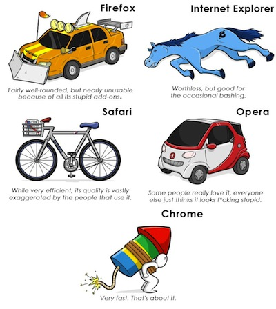

Firefox if you like plugins. Chrome if you like fast browsing and plugins.
Aurora is a beta to firefox in a sense. There’s also nightly which could be seen as an alpha.
In other words, you can play with new features before the rest of the herd.
{kind=link}
Chrome. I just like it more… FF just feels too bulky for some reason… The newer versions are really great though. But I stick to chrome.
I used firefox for years but it got to a point where it took forever to open up and started crashing more and more often, so I switched to chrome.
There are a couple things I dislike, but for the most part it’s an overall better experience and addons have finally caught on with ff’s extensions and there’s nothing I miss.
I hate Chrome’s interface. It conflicts with my sensibilities with how a program should be constructed, and it feels awkward and uncomfortable. I prefer Firefox.
Firefox for me, but Chrome is good too, mainly as a back-up browser (for me). Plus, Chrome is alot lighter than FF.
Chrome. It is faster for me than firefox. I am used to the positioning of everything (tools etc.) - It is annoying you must enable to favourites bar on first install though.
When I used firefox, it felt clunky and slow.
Firefox: 2005-2009
Chrome: 2009-Present
I still have both installed but I don’t think I’ve opened Firefox for anything but bookmarks.
I have used Firefox for god knows how many years. I checked out Chrome few weeks ago and it is still entirely inaccessible for Windows’ high contrast themes by the looks of it, and due to its interface I wasn’t able to actually investigate its options, so I promptly went back to the 'Fox. Maybe next time…
Right now the 'Fox uses around 150 MBs of RAM with just this webpage open, it is a bit much but it does scale well, with 30+ tabs it is still under 300 MBs. And I can count on my fingers how many times it has crashed since I started using it.
Personally I use FF because it’s a lot more like a real piece of Windows software, and not some basic web app on a tablet. I want to be able to customize it to look like it did back in v2.0 and I can.
Also with the amount of tabs I have open, Chrome eats 3 times the RAM that Firefox does.
I think this answered it.
I don’t like using too much ram especially since I often have games and lots of tabs open in Firefox at the same time.
And imo, Firefox doesn’t seem clunky and slow, so I guess I’ll stick with it for now.
Chrome. It’s sleek, flexible, and fast. And it isn’t a resource hogger like Firefox can be. I think this image also gives a good summery of all the browsers:

That’d be funny if it was true.
And it is.
No, it’s not.
Yeah, how is firefox unusable due to the addons? And if you have no addons installed? What then? How is speed the only major attribute to Chrome? Is it even true in every user scenario? Why is Opera described as a niche product when it’s the only one that is usable on slow mobile connections, by far. This pic is even worse than that stupid “how pc/mac/linux users see pc/mac/linux users” one. And internet explorer is not completely worthless, it can be used to install Chrome or Firefox.
Firefox always feels fucking slow, unresponsive and sluggish compared to chrome.
Former should fucking take a look at its life and learn something from the latter for once.
shut the fuck up
Firefox4lyf bro.
I like Chrome too and I’ve tried to switch to it a couple of times but it has a few things that just piss me off, also I don’t care if it’s faster than Firefox, I still think FF just cannot be beat in terms of functionality and customization.
Waterfox (64-bit variant of Firefox). Chrome does preform faster than Firefox, but it still does not have some plug-ins that I need (such as plug-ins that let you download youtube videos and such).